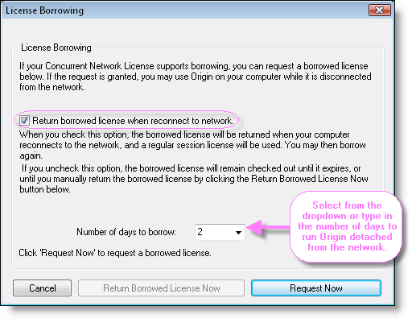
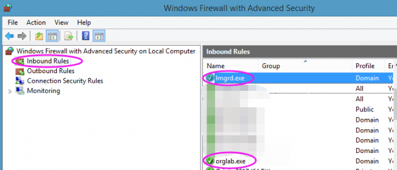
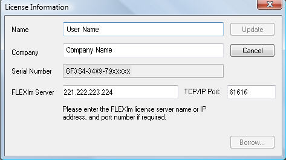

Zusätzliche Verwaltungsinformationen für Concurrent-Lizenzen
Concurrent-Additional-Info
Zusätzliche Lizenzverwaltungsinformationen
Zusätzlich zu den grundlegenden Schritten zum Einrichten Ihres Concurrent-Netzwerkpakets sind folgende weiterführende Themen vielleicht von Interesse:
Weitere Informationen zur FLEXnet-Lizenzverwaltung finden Sie in der FLEXnet-Dokumentation, die im Ordner \Help\ des FLEXnet-Servers installiert ist.
Origin ausführen, wenn es vom Netzwerk getrennt ist
Ihre FLEXnet-Concurrent-Netzwerkverwaltung unterstützt das Ausleihen. Dies bedeutet, dass Origin-Computer vom FLEXnet-Server getrennt werden können und Origin noch für einen gewissen Zeitraum ausführen können. Standardmäßig beträgt die maximal zugelassene Ausleihzeit eine Woche. Dieser maximale Zeitraum ist in der Lizenzdatei des FLEXnet-Servers kodiert, die Sie von der Webseite von OriginLab abrufen. Wenn Sie eine kürzere oder längere maximale Ausleihzeit benötigen (bis zu einem Monat), wenden Sie sich bitte an OriginLab.
Eine Lizenz für den Computer des Benutzers ausleihen
- Öffnen Sie Origin. Wählen Sie Hilfe: Über Origin.
- Klicken Sie auf die Schaltfläche Lizenz.
- Klicken Sie auf die Schaltfläche Ausleihen.
- Wählen Sie aus der Auswahlliste die Anzahl der Tage, die Sie die Lizenz ausleihen möchten.
- 
- HINWEIS: Die maximale Anzahl der Tage in der Auswahlliste ist ein Tag weniger als die maximale Anzahl, die in der Lizenzdatei angegeben ist. Die gezeigte Anzahl kann manuell überschrieben werden, solange die Anzahl, die Sie anfragen möchten, kleiner als die maximal möglich Anzahl der Tage ist.
Um zum Beispiel einen Ausleihzeitraum von 100 Tagen anzufragen, geben Sie 100 in dem Kombinationsfeld Anzahl der Ausleihtage (Number of day to borrow) ein.
- Klicken Sie auf Jetzt anfragen (Request Now).
- Sie sollten nun eine Meldung angezeigt bekommen, die aussagt, dass Ihre Lizenz erfolgreich ausgebucht wurde.
- Trennen Sie den Computer des Benutzers von dem Netzwerk VOR einem Neustart von Origin, wenn das Kontrollkästchen Ausgeliehene Lizenz bei erneuter Verbindung mit Netzwerk zurückgeben (Return borrowed license when reconnect to network) aktiviert ist.
HINWEIS:
Wenn Sie Origin neu starten, während die Verbindung zum Netzwerk noch besteht, wird Ihre Lizenz automatisch zurückgebucht, es sei denn, Sie haben das Kontrollkästchen Ausgeliehene Lizenz bei erneuter Verbindung mit Netzwerk zurückgeben deaktiviert, um die Lizenz auszuleihen.
Ein Hinweis zu Roaming User Profiles:
Roaming Profiles werden nicht von der FLEXnet-Lizenzausleihfunktion unterstützt. Die Ausleihfunktion kann jedoch dazu gebracht werden mit Roaming Profiles zusammenzuarbeiten, wenn Sie die folgende Vorgehensweise verwenden:
Um eine Lizenz auszuleihen:
- Melden Sie sich an dem Computer an, der Ihr Roaming Profile verwendet (Computer ist mit dem Netzwerk verbunden).
- Starten Sie Ihr Origin und leihen Sie eine Lizenz aus.
- Schließen Sie Origin.
- Trennen Sie die Verbindung zum Netzwerk und fahren Sie den Computer dann herunter. (Durch das Trennen vor dem Herunterfahren behalten Sie das Profil lokal, anstatt es auf dem Roaming-Profile-Server zu speichern.)
Um eine ausgeliehene Lizenz zurückzugeben:
- Starten Sie den Computer und melden Sie sich mit Ihrem Roaming Profile an (OHNE Verbindung mit dem Netzwerk).
- Stellen Sie wieder eine Verbindung zwischen Computer und Netzwerk her.
- Starten Sie Ihr Origin. Es gibt automatisch die ausgeliehene Lizenz zurück.
Ausleihzeitraum ändern
- Wenden Sie sich an den Support für die OriginLab-Lizenzierung. Sagen Sie uns Bescheid, wenn Sie eine neue Lizenzdatei mit einer längeren Ausleihzeit benötigen. Legen Sie diese neue maximale Ausleihzeit fest und schließen Sie Ihre Origin-Seriennummer mit ein.
- OriginLab teilt Ihnen dann per E-Mail mit, wann Sie eine neue Lizenzdatei erhalten können, die die angefragte maximale Ausleihzeit umfasst.
- Halten Sie Ihren FLEXnet-Dienst an.
- Machen Sie ein Backup von Ihrer aktuellen FLEXnet-Lizenzdatei.
- Speichern Sie dann die neue Lizenzdatei, so dass Sie die alte Lizenzdatei überschreiben.
- Starten Sie den FLEXnet-Dienst neu.
Einen vorhandenen FLEX-Server zum Verwalten von Origin verwenden
Wenn der Computer, auf dem Sie planen, einen Origin-FLEXnet-Dienst einzurichten, bereits andere Softwareprodukte mit FLEXnet verwaltet, dann können Sie diesen vorhandenen Computer für Ihre Origin-Lizenzverwaltung verwenden. Die einfachste Möglichkeit fortzufahren besteht in dem Einrichten Ihres Origin-FLEXnet-Dienstes, so dass er die gleiche lmgrd wie Ihr anderer Softwaredienst verwendet. Außerdem können Sie lmtools, das für Ihren anderen Softwaredienst installiert wurde, verwenden, um Ihren Dienst für Origin einzurichten.
Ihren Origin-Server mit Hilfe eines vorhandenen FLEX-Servers einrichten
/Video_Image_2016.png) Sehen Sie sich das Video-Tutorial an - Mit Hilfe eines vorhandenen FLEXnet-Servers den Origin-Dienst einrichten
Sehen Sie sich das Video-Tutorial an - Mit Hilfe eines vorhandenen FLEXnet-Servers den Origin-Dienst einrichten
- Speichern Sie den Vendor Daemon von OriginLab in dem Ordner, in dem Ihr lmgrd zurzeit gespeichert ist. Das Vendor Daemon von OriginLab ist auf der Origin-DVD verfügbar (für Windows OS navigieren Sie zu dem Ordner \Concurrent FLEXnet Servers\Windows\OriginLab Vendor Daemon Only\) oder kann von der OriginLab-Webseite heruntergeladen werden.
- Rufen Sie Ihre Origin-FLEXnet-Serverlizenz von der OriginLab-Webseite ab und speichern Sie die Lizenz in dem Ordner \Licenses\ des bestehenden FLEXnet-Servers.
- Verwenden Sie das vorhandene lmtools, um Ihren Origin-Dienst einzurichten und zu starten.
Weitere Informationen zum Einrichten von mehreren FLEXnet-Diensten auf dem gleichen Computer finden Sie im FLEXnet License Administration Guide, den Sie von der OriginLab-Webseite herunterladen können.
Siehe auch:
Zugriff durch eine Firewall zulassen
Um den Zugriff auf den FLEXnet-Server von außerhalb einer Firewall zuzulassen, müssen zwei Portnummern für die Firewall geöffnet und in die Lizenzdatei eingefügt werden. Unten finden Sie Schritt-für-Schritt-Anweisungen, wie dies einzurichten ist. Siehe im Abschnitt "Weitere Methoden" Informationen zu FLEXnet bei großen Einsatzorten etc.
An der Firewall
- Die interne IP-Adresse des FLEXnet-Servers muss eine entsprechende externe Adresse bei der Firewall haben.
- Überprüfen Sie jetzt, ob der FLEXnet-Server eine aktive Windows-Firewall hat. Falls ja, fügen Sie Inbound Rules hinzu, um zuzulassen, dass die folgenden Programme durch die Firewall gelangen. Sie befinden sich beide im Ordner Servers\ des FLEXnet-Servers.
- LMGRD.EXE - Der FLEXnet-Lizenzmanager
-
ORGLAB.EXE - Der Vendor Daemon von Origin
- 
- Wählen Sie zwei offene TCP/IP-Portnummern außerhalb des Bereichs 27000 - 27009, da FLexNet dies aus Sicherheitsgründen empfiehlt.
- Ein Port für lmgrd.exe, Lizenzservermanager, bereitgestellt von FLEXnet.
- Der andere für orglab.exe, Vendor Daemon, erstellt von OriginLab.
Auf dem FLEXnet-Server
Die von OriginLab erzeugte Lizenzdatei haben standardmäßig Portnummern. Sie müssen also die Portnummern, die Sie in der Firewall geöffnet haben, zur Lizenzdatei hinzufügen.
- Halten Sie den FLEXnet-Server an, falls er bereits ausgeführt werden sollte.
- Öffnen Sie die FLEXnet-Lizenzdatei mit einem Texteditor.
- Fügen Sie eine Portnummer direkt am Ende der Zeile SERVER ein, getrennt mit einem Leerzeichen.
- Fügen Sie die andere Portnummer am Ende der Zeile VENDOR ein, angefangen mit port=.
- Wenn zum Beispiel die offenen Portnummern 61616 und 61617 sind, würden Sie die Lizenzdatei folgendermaßen bearbeiten:
SERVER my_server 17007ea8 61616 VENDOR orglab port=61617
Hinweis: Sie müssen "port= " für den Port in der Zeile VENDOR, aber nicht in der Zeile SERVER hinzufügen.
- Nehmen Sie ansonsten keine Änderungen in der Lizenzdatei vor und speichern Sie die Lizenzdatei erneut.
- Starten Sie Ihren FLEXnet-Dienst neu.
- Fügen Sie die zwei Portnummern in Inbound Rules zur Firewall des Rechners des FLEXnet-Servers hinzu.
Auf Rechnern mit Origin-Client
Jetzt müssen alle Origin-Anwender ihr Origin neu starten und die Lizenzinformationen erneut aktualisieren. Im Folgenden finden Sie die Schritte:
- Geben Sie die externe IP-Adresse des FLEXnet-Servers im Textfeld FLEXlm-Server ein.
- Geben Sie die Portnummer in der Zeile SERVER im Textfeld Portnummer ein.
Beispiel: Für den FLEXnet-Server, dessen externe IP-Adresse für die Firewall 221.222.223.224 lautet und dessen SERVER-Port für die Firewall 61616 ist, sieht der Dialog Lizenzinformationen in etwa wie der folgende aus:

Fehlerbehebung
Falls Origin durch die Firewall nicht mit dem FLEXnet-Server verbunden werden kann,
- kehren Sie zurück zum Rechner des FLEXnet-Servers und führen Sie LMTools.exe aus. Gehen Sie zurück zur Registerkarte Server Status, um eine Statusabfrage durchzuführen (Perform Status Enquiry) und damit sicherzustellen, dass der Server ordnungsgemäß ausgeführt wird.
- Gehen Sie zur Registerkarte, um das Log anzuzeigen.
- Kontaktieren Sie reginfo@originlab.com mit der angehängten Log-Datei.
Weitere Methoden
Die obige Beschreibung funktioniert in allen Fällen, in denen sich eine Firewall zwischen dem FLEXnet-Server und dem Origin-Client befindet. Unter bestimmten Umständen (große Einsatzorte etc.) möchten Anwender jedoch vielleicht zusätzliche Schritte machen.
- FLEXnet-Serveradresse vs. Server-DNS-Name: Wenn Sie in Origins Dialog Lizenzinformationen die IP-Adresse des Servers eingeben, gehen wir davon aus, dass die Adresse nicht vom DNS abgerufen werden kann. In Fällen, in denen der Name des FLEXnet-Servers im DNS ist, kann der vollständig qualifizierte Domainname des Servers im Textfeld FLEXlm-Server eingegeben werden.
- Für große Sites ist das Aktualisieren des Dialogs Lizenzierungsinformationen mit Origin auf jedem Rechner sehr aufwändig. Die Bearbeitung der Datei USE_SERVER.lic ist womöglich besser. Falls Origin zuvor erfolgreich mit einem FLEXnet-Dienst verbunden werden konnte, gibt es eine Textdatei mit dem Namen USE_SERVER.lic im Lizenzordner. Sie können den Speicherort des Lizenzordners durch Ausführen von Origin finden. Wählen Sie im Menü Einstellungen: Optionen -> Registerkarte Systempfad. Sie können ihn manuell bearbeiten.
Bevor Sie die Portnummer hinzufügen, enthält die Datei den folgenden Text:
SERVER <ServerName> ANY USE_SERVER
Wobei ServerName der Hostname oder die IP-Adresse des FLEXnet-Servers ist, mit dem Origin zuvor verbunden war.
Um manuell die Origin-Lizenzdatei zu bearbeiten:
- Ändern Sie den ServerName in den Hostnamen oder die IP-Adresse des FLEXnet-Servers.
- Fügen Sie nach ANY die für die Firewall geöffnete SERVER-Portnummer hinzu.
Beispiel: Für den FLEXnet-Server, dessen externe IP-Adresse 221.222.223.224 lautet und dessen FLEXnet-Port bei der Firewall 61616 ist, sollte die Datei USE_SERVER.lic folgendermaßen angezeigt werden:
SERVER 221.222.223.224 ANY 61616 USE_SERVER
Concurrent-Anwender hinzufügen
Um weitere Anwender zu Ihrem Concurrent-Netzwerk hinzuzufügen, müssen Sie zunächst zusätzliche Anwenderlizenzen von OriginLab oder Ihrem Origin-Vertriebspartner erwerben. Wenn Sie dies getan haben, erhalten Sie eine Benachrichtigung, dass die Bestellung bearbeitet wird. Zu diesem Zeitpunkt sollten Sie Folgendes tun:
- Gehen Sie auf die OriginLab-Webseite.
- Melden Sie sich mit dem gleichen Konto der Web-Mitgliedschaft aus, das Sie verwendet haben, um die vorherige FLEX-Lizenzdatei abzurufen.
- Nachdem Sie sich angemeldet haben, sehen Sie Ihre Seite der "Origin-Produktregistrierung". Aktivieren Sie das Kontrollkästchen neben Ihrer Seriennummer/Version und klicken Sie dann auf die Schaltfläche FLEXnet-Lizenz anfordern, die sich unter der Tabelle befindet.
- Eine Webseite wird geöffnet, auf der bereits der Hostname und die Host-ID vorausgefüllt sind. Klicken Sie auf die Schaltfläche Senden.
- Der neue Lizenztext wird jetzt auf der Webseite angezeigt. Kopieren Sie den Lizenzdateitext und fügen Sie ihn in einen Texteditor ein.
- Halten Sie Ihren FLEXnet-Dienst an.
- Erstellen Sie ein Backup Ihrer alten Lizenzdatei und speichern Sie dann die neue Lizenzdatei, so dass die alte Lizenzdatei überschrieben wird.
- Starten Sie Ihren FLEXnet-Dienst neu und überprüfen Sie, dass die neue Lizenzdatei korrekt gelesen wird.
Drei redundante FLEXnet-Server einrichten
Origin unterstützt die Drei-Server-Redundanz, wie sie in Macrovisions FLEXnet Licensing End User Guide, Kapitel 3, Abschnitt "Three-Server Redundancy" beschrieben wird.
Origin-spezifische Informationen zum Einrichten der FLEXlm-Dienste:
Lizenzdatei abrufen
Nachdem Sie drei FLEXnet-Server ausgewählt haben, müssen Sie sich an OriginLab wenden, um die Lizenzdatei anzufragen.
E-Mail: RegInfo@OriginLab.com
Bitte geben Sie in Ihrer E-Mail an, dass Sie eine Lizenzdatei für drei redundante Server benötigen, und schließen Sie Ihre Origin-Seriennummer, die Version sowie den Hostnamen und die Physikalische Adresse (Host-ID) für alle drei Computer mit ein.
OriginLab sendet Ihnen die Lizenzdatei per E-Mail zu.
Lizenzdatei bearbeiten
Nachdem Sie die Lizenzdatei erhalten haben, müssen Sie sie folgendermaßen bearbeiten:
- Ihre Lizenzdatei enthält drei SERVER-Zeilen. Der Server in der ersten SERVER-Zeile ist der MASTER. Um einen anderen Server als den Master festzulegen, ändern Sie die Reihenfolge der SERVER-Zeilen in der Lizenzdatei.
- Als Nächstes müssen Sie eine TCP/IP-Portnummer zu jeder SERVER-Zeile in der Lizenzdatei hinzufügen. Für jede SERVER-Zeile (FLEX-Server) kann der TCP/IP-Port ein beliebiger nicht verwendeter Port auf diesem Rechner sein; er muss sich nur zwischen 1024 und 32000 befinden. Sie müssen also für jeden FLEX-Server einen nicht verwendeten Port innerhalb dieses Bereichs suchen und dann diese Portnummer auf der jeweiligen SERVER-Zeile der Lizenzdatei festlegen. Sie können die gleiche Portnummer auf jeder SERVER-Zeile verwenden (davon ausgehend, dass diese Portnummer auf jeder Zeile nicht verwendet wird) oder Sie können verschiedene Portnummern festlegen. Hier ist ein Beispiel, in dem die gleiche Portnummer (2837) auf allen drei Maschinen nicht verwendet wird und in allen SERVER-Zeilen festgelegt ist:
SERVER hostname1 hostid1 2837 SERVER hostname2 hostid2 2837 SERVER hostname3 hostid3 2837
FLEXnet-Dienste einrichten
Sobald Sie den Dienst auf jeder Maschine eingerichtet haben, starten Sie jeden Dienst.
Führen Sie dann eine Statusabfrage auf jeder der Maschinen durch (Sie möchten sicherstellen, dass alle drei Maschinen die anderen beiden Maschinen "erkennen").
Der Status sollte das Erkennen der drei LMGRD-Prozesse melden. Ihr MASTER-Server sollte auch als "MASTER" gekennzeichnet sein.
Origin einrichten
Sobald die drei Dienste ordnungsgemäß ausgeführt werden, sollten Sie Origin starten. Beim Start wird Ihnen der Dialog Lizenzinformationen angezeigt. Sie sollten diesen folgendermaßen bearbeiten:
Textfeld FLEXlm-Server:
Geben Sie die Hostnamen oder IP-Adressen der drei FLEXlm-Server getrennt mit einem Semikolon ein, wobei Sie der Reihenfolge in der Lizenzdatei folgen. Zum Beispiel:
hostname1;hostname2;hostname3
Textfeld TCP/IP-Port:
Da sich in jeder SERVER-Zeile Portnummern befinden, müssen Sie die Portnummern auch in dem Textfeld TCP/IP-Port eingeben. Sie sollten wieder in der gleichen Reihenfolge wie in der Lizenzdatei eingegeben werden und getrennt durch Semikolons. Zum Beispiel:
2837; 2837; 2837
(In diesem Fall sind die Portnummern alle identisch. Wenn sie unterschiedlich wären, müssten Sie der Reihenfolge in der Lizenzdatei folgen.)
Verwendung von Origin mit einer Optionsdatei einschränken
Allgemeine Informationen
Die folgenden Informationen sind nur für Origin-Concurrent-Netzwerk Lizenzen anwendbar. Sie können sich entscheiden, ob Sie die Verwendung von Origin mit Hilfe einer Optionsdatei einschränken möchten. Dies kann zum Beispiel sein, wenn Sie nur festgelegten Anwendern das Ausführen oder Ausleihen von Origin erlauben möchten. Oder Sie möchten die Origin-Lizenzen aufgrund von Nichtverwendung zurückbuchen. Oder Sie möchten festgelegte Anwender beim Ausführen von Origin einschränken. Oder Ihre Organisation hat mehrere Gruppen von Origin-Anwendern und Sie möchten die Anzahl von Anwendern in jeder Gruppe beschränken, die Origin gleichzeitig ausführen können. Für jedes dieser Vorhaben können Sie eine Optionsdatei verwenden.
Origin unterstützt die Verwendung einer Optionsdatei, wie in der PDF-Datei LicenseAdministrationGuide.pdf beschrieben, die im Hilfeordner des FLEXnet-Servers von Origin installiert ist.
Wir empfehlen, dass Sie der Optionsdatei den Namen orglab.opt geben und sie in dem gleichen Ordner wie Ihre Origin-Lizenzdatei speichern. Wenn Sie dies tun, dann müssen Sie keine Änderung an Ihrer Lizenzdatei vornehmen.
Beispiele
Beispiel 1: 10 OriginPro-Lizenzen sind für Computer reserviert, die sich auf zwei durch IP4 definierten Subnetzen befinden, 4 OriginPro-Lizenzen sind für Computer auf einem dritten Subnetz reserviert, das durch IP definiert ist, und alle OriginPro-Lizenzen werden mit einem 15-Minuten-Intervall auf Nichtverwendung geprüft:
HOST_GROUP CHEM_BIO_subnets 149.171.194.* 149.171.195.* HOST_GROUP PHYSICS_subnet 129.94.216.* RESERVE 10 OriginPro HOST_GROUP CHEM_BIO_subnets RESERVE 4 OriginPro HOST_GROUP PHYSICS_subnet TIMEOUT OriginPro 900
Hinweis: Die minimale Zeitüberschreitung (TIMEOUT) sind 15 Minuten oder 900 Sekunden. Die Sekunden müssen in der Optionsdatei eingegeben werden, damit Origin bzw. OriginPro nach Ablauf dieser Zeitdauer zurückgebucht werden, wenn die Software nicht verwendet wurde. Sie müssen den FEATURE-Namen in das TIMEOUT einschließen, d.h., entweder muss Origin oder OriginPro in der Syntax der Optionsdatei enthalten sein. Beispiel: TIMEOUT Origin 900 bzw. TIMEOUT OriginPro 900. Wenn Ihre Lizenz sowohl Origin als auch OriginPro umfasst, müssen Sie eine Zeile für jedes FEATURE hinzufügen, um die Zeitdauer der Zeitüberschreitung TIMEOUT in Ihrer Optionsdatei festzulegen.
Beispiel 2: Beschränkt Anwender vom Ausführen von Origin basierend auf der IP-Adresse:
HOST_GROUP exclude_these_computers 10.10.10.37 10.10.10.57 EXCLUDEALL HOST_GROUP exclude_these_computers
Beispiel 3: Beschränkt Anwender vom Ausführen von Origin basierend auf dem Computernamen:
HOST_GROUP exclude_these_computers computer1 computer2 EXCLUDEALL HOST_GROUP exclude_these_computers
Beispiel 4: Definiert eine Anwendergruppe, die OriginPro ausführen können, und eine zweite Anwendergruppe, die OriginPro auch im Ausleihmodus ausführen können.
GROUP origin_users user1 user2 user3 user4 user5 user6 INCLUDEALL GROUP origin_users GROUP origin_borrowers user1 user4 INCLUDE_BORROW OriginPro GROUP origin_borrowers
Beispiel 5: Das Ausleihen von Lizenzen wird für alle Benutzer deaktiviert.
BORROW_LOWWATER OriginPro n
Wobei n die Gesamtanzahl der Benutzer in der Organisation ist.
Das Ausleihen von Lizenzen wird für eine Gruppe von definierten Benutzern deaktiviert.
GROUP exclude_borrowers user1 user2 EXCLUDE_BORROW OriginPro GROUP exclude_borrowers
Beispiel 6: Reserviert nur eine gleichzeitige Lizenz für den festgelegten Anwender (Bill). Hierfür wird die Groß- und Kleinschreibung berücksichtigt.
RESERVE 1 OriginPro USER Bill
Beispiel 7: Lizenzen werden für eine Anwendergruppe reserviert. In diesem Beispiel gibt es nur ein Mitglied der Gruppe. Der Anwendername berücksichtigt KEINE Groß- und Kleinschreibung.
GROUPCASEINSENSITIVE ON GROUP ReservedUsers bill RESERVE 1 OriginPro GROUP ReservedUsers
Beispiel 8: Reserviert Lizenzen für Anwender, Maschinen und IP-Adressen, alle unter Berücksichtigung von Groß- und Kleinschreibung.
GROUPCASEINSENSITIVE ON HOST_GROUP ReservedHostMachines einstein currie galileo 123.123.123.123 456.456.456.456 GROUP ReservedUsers Jack Jill Hansel Gretel RESERVE 1 OriginPro USER bill RESERVE 4 Origin GROUP ReservedUsers RESERVE 1 OriginPro HOST kepler RESERVE 5 Origin HOST_GROUP ReservedHostMachines
Beispiel 9: Angenommen, Sie führen eine kombinierte Lizenz von zwei OriginPro-Seriennummern aus, A und B. Das folgende Beispiel reserviert 2 Lizenzen der Seriennummer A für Gruppe CHEM_BIO_subnets und 1 Lizenz der Seriennummer B für Gruppe PHYSICS_subnet.
Die Gruppen werden in IP-Adressen definiert. Die Syntax feature:keyword=value wird zum Unterscheiden einer besonderen Lizenzgruppe verwendet, wenn es mehrere FEATURE/INCREMENT-Zeilen für ein einzelnes Feature gibt. Hier legt OriginPro:user_info=A den Lizenzpool der Seriennummer "A" für das Feature OriginPro fest.
HOST_GROUP CHEM_BIO_subnets 149.171.194.* 149.171.195.* HOST_GROUP PHYSICS_subnet 129.94.216.* RESERVE 2 OriginPro:user_info=A HOST_GROUP CHEM_BIO_subnets RESERVE 1 OriginPro:user_info=B HOST_GROUP PHYSICS_subnet
Hinweis: feature:keyword=value funktioniert zurzeit nicht für TIMEOUT.
Gemischtes Concurrent-Netzwerklizenzpaket von Origin und OriginPro
OriginLab bietet eine gemischte Concurrent-Netzwerklizenz für Origin und OriginPro an, bei der eine Serverlizenz sowohl eine Lizenz für Origin als auch eine Lizenz für OriginPro enthalten kann. Im Rahmen dieser Lizenzen kann ein OriginPro, das mit einer OriginPro-Seriennummer installiert ist, eine Origin-Standardlizenz vom Lizenzserver beziehen, um Standardfunktionen von Origin zu verwenden. Die Software kann manuell wieder in OriginPro verwandelt werden, um OriginPro-Funktionen zu verwenden, wenn eine OriginPro-Lizenz verfügbar ist. Ein reguläres Origin, das mit einer Standardseriennummer für Origin installiert ist, kann keine OriginPro-Lizenzen beziehen, auch wenn diese verfügbar sind. Ihr Softwareadministrator möchte vielleicht einigen Anwendern, die nur die Origin-Standardfunktionen brauchen, eine Origin-Standardseriennummer zuweisen, um das Risiko von Konflikten um OriginPro-Lizenzen zu verringern. Er kann sich aber auch an OriginLab wenden, um die Anzahl der OriginPro-Lizenzen zu erhöhen.
Eine Lizenz für ein gemischtes Concurrent-Netzwerklizenzpaket abrufen
Dieses Lizenzpaket wird mit zwei Seriennummern ausgeliefert: eine für die Standardsoftware Origin und eine weitere für OriginPro. Die letzten sieben Stellen der Seriennummern sind identisch.
- Melden Sie sich unter www.originlab.com/reginfo an.
- Klicken Sie auf "Registrierung oder Generierung einer Lizenzdatei".
- Wählen Sie "Ich möchte meine Origin-Software registrieren und eine Lizenzdatei für einen Computer anfordern". Klicken Sie auf Weiter.
- Wählen Sie Ihre Origin-Version und geben Sie Ihre Origin-Seriennummer ein. (Hinweis: Sie können entweder die Seriennummer für die Standardversion von Origin oder die OriginPro-Seriennummer eingeben. Die Webseite erkennt, ob es sich um eine gemischte Lizenz für Origin und OriginPro handelt und erzeugt eine entsprechende Lizenz.) Klicken Sie auf Weiter.
- Geben Sie den Hostnamen und die Host-ID Ihres Servers ein. Klicken Sie auf Senden. Es wird eine Lizenz für Sie erzeugt. Diese hat zwei FEATURE-Zeilen, eine für die Standardversion von Origin und eine weitere für OriginPro.
- Bitte befolgen Sie die Vorgehensweisen für die Einrichtung des FLEXnet-Servers, um den FLEXnet-Server zu installieren und zu starten.
Mit FLEXnet-Server verbinden
- Installieren Sie Origin mit der OriginPro-Seriennummer oder der Seriennummer für die Standardversion von Origin.
- Starten Sie Origin, indem Sie doppelt auf das Origin-Programmsymbol klicken.
- Der Dialog für die Lizenzinformationen wird geöffnet. Geben Sie den FLEXlm-Servernamen (und ggf. den TCP/IP-Port) ein. Klicken Sie auf die Schaltfläche Aktualisieren, um Lizenzen vom FLEXnet-Server zu beziehen.
- Sowohl Origin als auch OriginPro werden als Standardversion von Origin gestartet, vorausgesetzt, es ist eine Standardlizenz verfügbar. Normalerweise liegen weniger Pro-Lizenzen als Origin-Standardlizenzen vor. Ihr Softwareadministrator möchte möglicherweise nicht, dass OriginPro-Lizenzen ausgegeben werden, es sei denn, ein Anwender muss die Funktionen von OriginPro verwenden.
- Wenn alle Origin-Standardlizenzen ausgegeben sind, bezieht OriginPro OriginPro-Lizenzen.
- Die Titelleiste der Anwendung zeigt "Origin" bzw. "OriginPro", abhängig davon, welche Lizenz aktuell verwendet wird. Wenn eine Standardlizenz verwendet wird, sind die OriginPro-Funktionen nicht verfügbar.
Zwischen Origin und OriginPro wechseln
- Klicken Sie auf das Menü Hilfe und wählen Sie Über Origin.
- Klicken Sie auf Lizenz...
- Der Dialog für die Lizenzinformationen wird geöffnet.
- Aktivieren Sie die Option OriginPro und klicken Sie auf die Schaltfläche Aktualisieren.
- Wenn eine OriginPro-Lizenz nicht verfügbar ist, wird Ihnen die Meldung "OriginPro-Lizenz ist derzeit nicht verfügbar. Bitte versuchen Sie es zu einem späteren Zeitpunkt." angezeigt.
- Wenn eine OriginPro-Lizenz verfügbar ist, wird Ihnen die Meldung "Ihre Lizenz wurde erfolgreich aktualisiert." angezeigt. Sie müssen OriginPro neu starten, damit die OriginPro-Funktionen aktiviert werden. Wenn die Titelleiste nach dem Neustart "Origin" und nicht "OriginPro" zeigt, wurde die OriginPro-Lizenz in der Zwischenzeit von einem anderen Anwender abgerufen. Ihnen stehen nur die Funktionen der Standardversion von Origin zur Verfügung.
- Sobald die Standardversion zu OriginPro gewechselt hat, bleibt es im Weiteren OriginPro, es sei denn:
- Sie wechseln im Dialog der Lizenzinformationen manuell wieder zurück zu der Standardversion von Origin.
- Wenn keine OriginPro-Lizenzen verfügbar sind, versucht Origin die Lizenz für eine Standardversion von Origin zu beziehen, falls diese verfügbar ist. Es stehen dann nur die Funktionen der Standardversion von Origin zur Verfügung.
Lizenz nach Verlängerung der Softwarepflege aktualisieren
Nachdem Sie Ihre Softwarepflege verlängert haben, sollten Sie eine neue Lizenz für den FLEXnet-Server abholen und einspielen. Diese Lizenz enthält das neue Ablaufdatum Ihrer Softwarepflege. Ihren Origin-Anwendern wird dann nicht länger eine Verlängerungsmeldung für ihre Softwarepflege angezeigt, und der Dialog 'Über Origin' gibt das korrekte Ablaufdatum der Softwarepflege an.
Nachdem Ihre Softwarepflege verlängert wurde, befolgen Sie bitte die folgenden Schritte, um Ihre neue Lizenz für den FLEXnet-Server zu erhalten.
- Öffnen Sie www.originlab.com/reginfo.
- Melden Sie sich mit dem gleichen Konto der Web-Mitgliedschaft aus, das Sie verwendet haben, um die vorherige FLEX-Lizenzdatei anzufragen.
- Nachdem Sie sich angemeldet haben, sehen Sie Ihre Seite "Meine Lizenz(en) verwalten". Aktivieren Sie das Kontrollkästchen neben Ihrer Seriennummer/Version und klicken Sie dann auf die Schaltfläche FLEXnet-Lizenz anfordern, die sich unter der Tabelle befindet.
- Eine Webseite wird geöffnet, auf der bereits der Hostname und die Host-ID vorausgefüllt sind. Klicken Sie auf die Schaltfläche Senden.
- Der neue Lizenztext wird jetzt auf der Webseite angezeigt. Kopieren Sie den Lizenzdateitext und fügen Sie ihn in einen Texteditor ein.
- Halten Sie Ihren FLEXnet-Dienst an.
- Erstellen Sie ein Backup Ihrer alten Lizenzdatei und speichern Sie dann die neue Lizenzdatei, so dass die alte Lizenzdatei überschrieben wird.
- Starten Sie Ihren FLEXnet-Dienst neu und überprüfen Sie, dass die neue Lizenzdatei korrekt gelesen wird.
Upgrade für ein Concurrent-Netzwerklizenzpaket durchführen
Wenn Sie bereits einen FLEXnet-Dienst zum Verwalten Ihrer vorherigen Version von Origin haben, dann müssen Sie nur eine neue Lizenz für die aktuelle Version abrufen und Ihren Dienst aktualisieren, damit dieser mit der neuen Lizenz läuft. Sobald dies geschehen ist, erlaubt der aktualisierte FLEXnet-Dienst Ihren Anwendern das Ausführen der neuen Origin-Version. Sie können auch fortfahren, ihre vorherige Origin-Version* zu verwenden. Der Dienst zählt die Gesamtanzahl der Anwender, die Origin/OriginPro ausführen, und beschränkt diese auf die erworbene Anzahl.
Hinweis:
- Um Lizenz- und Sicherheitsprobleme zu vermeiden, aktualisieren Sie bitte Ihren FLEXnet-Server auf die neueste Version. Lesen Sie hier weitere Einzelheiten.
- Anwender der Version 8.0 müssen SR2 oder höher ausführen. Anwender der Version 7.5 müssen SR7 ausführen.
|
Schritte zum Abrufen der neuen Lizenz und Aktualisieren Ihres Dienstes mit dieser Lizenz:
Sehen Sie sich das Video-Tutorial an - Ihren FLEXnet-Dienst zum Verwenden der neuesten Origin-Version aktualisieren
- Öffnen Sie www.originlab.com/reginfo.
- Melden Sie sich an Ihrem Online-Konto an, unter dem Sie die registrierte Seriennummer finden. Klicken Sie auf den Link "Meine Lizenz(en)". Klicken Sie auf die Schaltfläche "Neue Seriennummer registrieren".
- Wählen Sie "Ich möchte meine Origin-Software registrieren und eine Lizenzdatei für einen Computer anfordern" und klicken Sie auf Weiter.
- Wählen Sie Ihre Origin-Version und wählen Sie/geben Sie Ihre Origin-Seriennummer ein (wie bei Ihrer vorherigen Version).
- Geben Sie den Hostnamen und die Ethernet-Adresse (Mac, Physikalisch) Ihres FLEXnet-Servers ein und erzeugen Sie Ihre Lizenz.
- Kopieren Sie den Lizenztext von der OriginLab-Webseite.
- Halten Sie den FLEXnet-Dienst an, falls er laufen sollte.
- Navigieren Sie zu der Lizenzdatei Ihres FLEXnet-Servers und speichern Sie ein Backup in einem anderen Speicherort.
- Öffnen Sie dann die Lizenzdatei Ihres FLEXnet-Servers in einem Texteditor. Ersetzen Sie den aktuellen Lizenztext mit dem Text von der OriginLab-Webseite.
- Speichern Sie die Lizenz erneut und stellen Sie sicher, dass Sie die Datei in dem gleichen Speicherort und unter dem gleichen Dateinamen gespeichert haben. Warnung: Stellen Sie sicher, dass Ihre aktualisierte Lizenzdatei unter Windows Server 2008, 2012, Windows Vista, 7, 8, 8.1 und 10 im korrekten Ordner gespeichert wurde und nicht im Windows VirtualStore.
- Starten Sie Ihren FLEXnet-Dienst und führen Sie eine Statusabfrage durch, um sicherzugehen, dass er korrekt ausgeführt wird.
/Tip_icon.png) |
Wenn der Server nach Ersetzen der Lizenzdatei nicht gestartet werden kann, liegt das wahrscheinlich daran, dass der Server nicht erfolgreich in Schritt 7 angehalten wurde. Bitte öffnen Sie den Dialog Task Manager --> Dienste und prüfen Sie, ob ein Origin-Lizenzserver im Hintergrund ausgeführt wird. Wenn ja, halten Sie ihn an und starten Sie ihn neu.
|
Siehe auch
Lizenz auf Server deaktivieren
Eine Systemübertragung ist nur erforderlich, wenn Sie den FLEXnet-Lizenzserver ersetzen müssen. Sie muss nicht durchgeführt werden, wenn ein Origin-Computer ersetzt wird.
Um eine Lizenz zu deaktivieren, müssen Sie ein Antragsformular für eine Systemübertragung auf der Webseite von OriginLab ausfüllen.
- Öffnen Sie www.originlab.com und melden Sie sich an.
- Klicken Sie auf der Willkommensseite auf "Übersicht über registrierte Produkte".
- Aktivieren Sie das Kontrollkästchen neben Ihrer Seriennummer und klicken Sie dann unten auf die Schaltfläche Report a licensed server no longer in use (Einen nicht mehr verwendeten lizenzierten Server melden).
FLEXnet-Server umziehen und Mitglieder auf den neuen Standort aktualisieren
Wenn Sie einen FLEXnet-Lizenzserver auf einer anderen Maschine installieren und einrichten müssen, tun Sie Folgendes:
- Deaktivieren Sie die Lizenz auf der ursprünglichen Maschine des Servers.
- Richten Sie den FLEXnet-Server auf der neuen Maschine ein.
- Wenn der FLEXnet-Server nach dem Austausch erfolgreich läuft, können Sie die Datei USE_SERVER.lic auf den Client-Maschinen bearbeiten. Die Datei USE_SERVER.lic befindet sich im Lizenzordner:
- Origin 2017 und höhere Versionen - Windows Vista, 7, 8, 8.1 und 10 - C:\ProgramData\OriginLab\License
- Origin 2016 - Windows Vista, 7, 8, 8.1 und 10 - C:\Users\Public\Documents\OriginLab##\License
- Origin 2015 und ältere Versionen - Windows Vista, 7, 8, 8.1 und 10 - C:\ProgramData\OriginLab##\License
Üblicherweise wird diese Datei von folgendem Text begleitet, davon ausgehend, dass der FLEXnet-Server <FLEXnet server> lautet.
SERVER <FLEXnet server> ANY USE_SERVER
Ein FLEXnet-Server mit 3-Server-Redundanz wird auch unterstützt. Wenn Sie z. B. drei Server haben, <one>, <two>, <three>, und drei Ports 12345, 23456, 34567, dann sieht die Datei USE_SERVER.lic folgendermaßen aus:
SERVER <one> ANY 12345 SERVER <two> ANY 23456 SERVER <three> ANY 34567 USE_SERVER
Hinweis: Wenn Sie über eine Lizenz für mehrere Arbeitsplätze (Benutzer) verfügen, bietet die Funktion des Gruppenordners eine einfache Methode, um alle Gruppenmitglieder mit dem neuen FLEXnet-Server zu aktualisieren. Bitte lesen Sie [Seite].